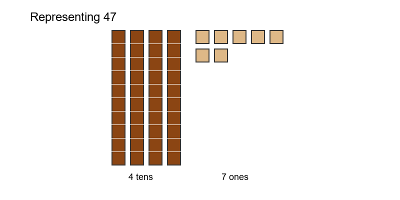
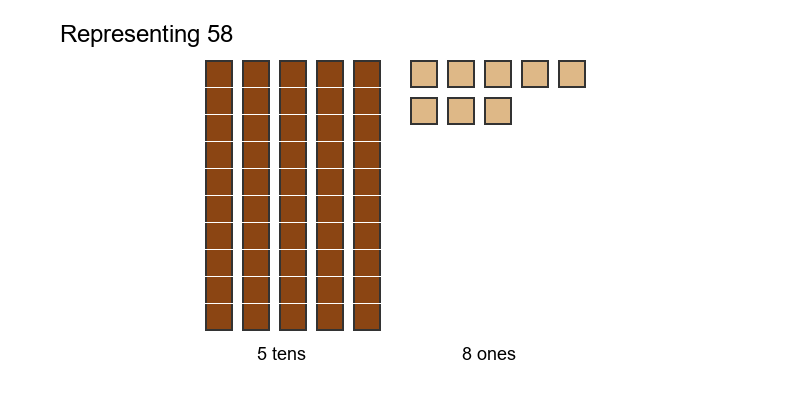
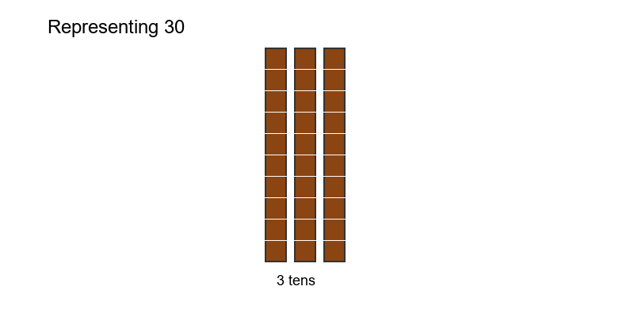
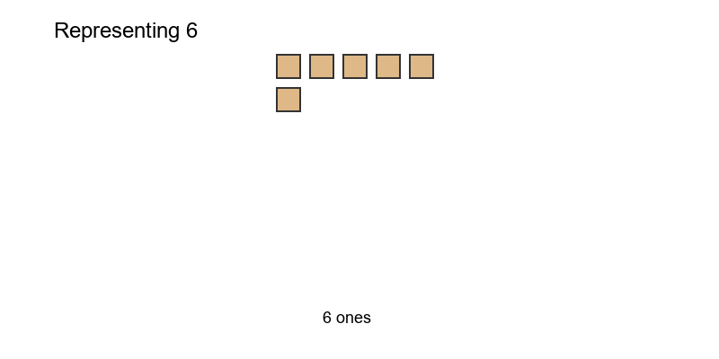
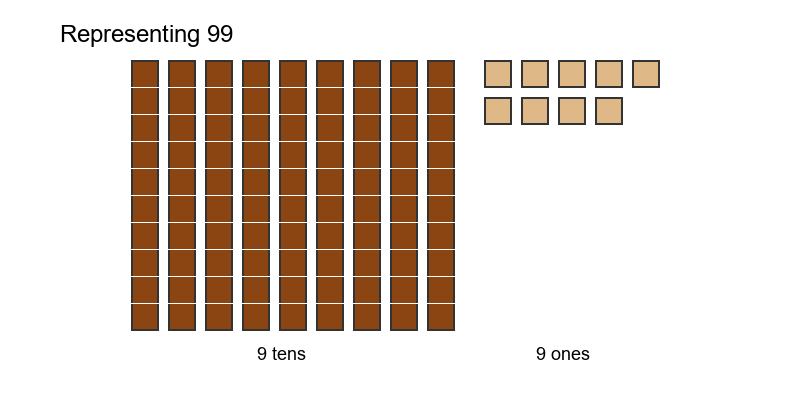

Python-Generated vs SVG Isometric Cubes





For ages 7-9, the Python 2D version is recommended. The simpler visual design reduces cognitive load and makes the mathematical concept clearer. The 3D SVG version is beautiful but may be more distracting than helpful for screen-based learning.
Suggested hybrid: Use Python for thought prompts, but consider SVG for print materials or advanced learners.